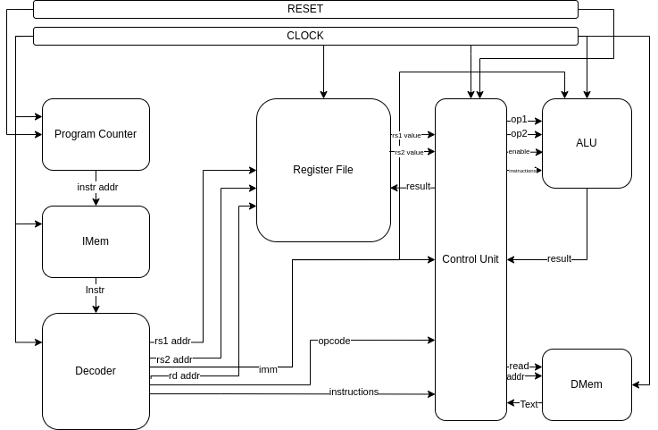

–Shri Vishakh Devanand –Aditya Mahajan –Shaurya Rane
Understanding the Basics
The ApexCore project is an immersive journey into the world of computer architecture and organization (COA). Although the subject is vast and intricate, we, Shri Vishakh Devanand, Aditya Mahajan, and Shaurya Rane, began our exploration by understanding the core components of a CPU. We started with an edX course that, despite being taught in TLVerilog (a newer and less common programming language), provided us with the foundational knowledge necessary to progress.
A simple breakdown of the CPU
 To understand the logic of how it works, let’s go through the diagram with the flow.
- Imagine a 32-bit instruction is going through to the CPU.
- Instructions are stored in Instruction Memory and they are accessed via addresses stored in Program Counter. The instruction received by the decoder to decode the instruction into what generally occurs into 3 or 4 different things. The instruction type is defined by the operation code.
- The source values are given as the address of its place in the register, rather than the value itself, or for some instructions there comes something called immediate values, where you don’t want to store the value but just use the value for another calculation and lose it.
- Then the destination register, where the calculated value is going to be stored until it is stored in memory or discarded.
- Then, it goes into the control unit, where it decides what type of calculation is required for this particular instruction and sends it to the ALU to calculate it.
- Once the final result is received by the control unit, it is then stored in the destination register as instructed.
What have we done so far
We have completed testing RV32-IM extensions under simulation, which introduces new instructions for multiplication and division. Here’s a detailed breakdown of our progress:
- Code Optimization: We revisited the M extension to refine the code, focusing on enhancing efficiency and ensuring proper functionality.
- Simulation: Using Vivado, we simulated the RV32-IM extensions. The simulation verified that the new instructions for multiplication and division were correctly implemented and functioning as expected.
- Debugging and Validation: During simulation, we meticulously debugged the code to identify and fix any issues. This process was crucial for validating the correctness of our implementation.
- Documentation: Alongside coding and simulation, we documented our process and findings. This documentation will serve as a valuable reference for future development and troubleshooting.
- Preparation for Hardware Testing: We have prepared the code for the upcoming hardware testing phase. This includes ensuring compatibility with our target FPGA platform and setting up the necessary testing environment.

Plans for the coming days
- We are about to test the current code on hardware and ensure it works with high confidence.
- Keep adding more extensions like Atomic and Floating-point extensions to further increase the general usage of the core.
- Further End Goal of the project to create a soft-core that can be used for other projects, who don’t need to build a cpu from scratch in order to do so.